NTT DATA TECHのフィード
https://zenn.dev/p/nttdata_tech
NTT DATA公式アカウントです。 技術を愛するNTT DATAの技術者が、気軽に楽しく発信していきます。 当社のサービスなどについてのお問い合わせは、 お問い合わせフォーム https://nttdata.com/jp/ja/contact-us/ へお願いします。
フィード
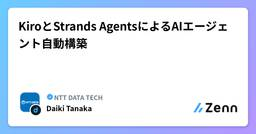
KiroとStrands AgentsによるAIエージェント自動構築
NTT DATA TECHのフィード
1. はじめに昨今、より簡単にAIエージェントを構築することが可能なフレームワークが多く発表され、ワーカーそれぞれが自業務の自動化を図るAIエージェントを独自作成できるようになってきています。AWS（Amazon Web Services）においては、Amazon Bedrockを用いてGUIから簡単にエージェントを構築し、ナレッジベースと連携したり、フローを組んだりすることができるようになっています。また、Strands Agentsを利用することでコードベースによる容易なエージェント作成だけでなく、AWSサービスや外部サービスとの連携を始めとした複雑なAIエージェントも構築可...
1日前
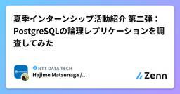
夏季インターンシップ活動紹介 第二弾：PostgreSQLの論理レプリケーションを調査してみた
NTT DATA TECHのフィード
はじめにはじめまして。OSSソリューション統括部の松永です。普段、私たちのチームは、PostgreSQLを主軸とするOSSの専門チームとして、社内のミッションクリティカルシステムへの開発参画および保守サポートを行っています。ミッションクリティカルシステムの開発・運用では、プロダクトの技術仕様を正確に理解したうえでの設計判断が不可欠です。さらに、障害発生時には、原因を迅速かつ的確に特定し、暫定対処から本格対処、再発防止策の実行までを着実に進めることが求められます。こうした要求に応えるためには、プロダクトの表面的な利用にとどまらず、内部構造や挙動を理解したうえでの調査・解析が欠か...
2日前
Amazon Bedrockのアプリケーション推論プロファイルを楽に管理したい
NTT DATA TECHのフィード
1. はじめにAWS（Amazon Web Services）では生成AIの基盤モデルを利用できるサービスとして、Amazon Bedrockが提供されています。各基盤モデルのARN（アカウントIDやリージョンごとに固有のリソース識別名）を用いることで、CLIやSDKを介してBedrockのモデルを呼び出すことができます。標準で利用できるクロスリージョンを含む基盤モデルARNは、アカウント/リージョン/モデル単位で一意に定義されています。例えば東京リージョンのClaude 3.5 Sonnetを利用したい場合、"arn:aws:bedrock:{リージョン名}:{アカウントID...
2日前
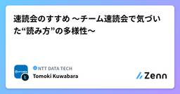
速読会のすすめ 〜チーム速読会で気づいた“読み方”の多様性〜
NTT DATA TECHのフィード
はじめに技術書を「買って満足」していませんか？書籍を買ったまま読まないでいることは積読とよく言われますが、私も忙しさを理由に多くの書籍を積読しています。ITエンジニアにとって、読書は重要な学習手段のひとつです。しかし、実際のプロジェクトは忙しく、腰を据えて読む時間を確保するのは簡単ではありません。私が所属するチームでは、読書時間を確保することに加え、学びを共有する場として、速読会を行っています。きっかけは、マネージャーが外部の速読会に参加したことでした。マネージャーの「チームでもやろう」という声かけから、定期的に開催するようになりました。 この記事はこんな方におすす...
2日前
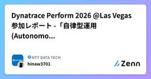
Dynatrace Perform 2026 @Las Vegas 参加レポート -「自律型運用(Autonomous)」への進化
NTT DATA TECHのフィード
はじめに2026年1月26日~29日にラスベガスで開催された「Dynatrace Perform 2026」に参加してきました。最初の2日間はテーマ別にハンズオン形式のTraining Sessionが開催されDynatraceを実際に触って理解を深められました。メインとなる後半2日間では新機能の発表、40以上の各ユーザ活用事例の発表などがあり、進化への衝撃を受けるとともに様々な活用方法を学ぶことができ、大変有意義な時間でした。本記事では、現地参加して感じた会場の雰囲気や基調講演で発表された新機能、いくつかの実際のユースケース、そしてイベント参加を通して感じたことなどについてレ...
2日前
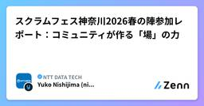
スクラムフェス神奈川2026春の陣参加レポート：コミュニティが作る「場」の力
NTT DATA TECHのフィード
2026/3/14～15で開催されたスクラムフェス神奈川2026春の陣に参加してきました。週末の宿泊型イベントで、参加者はおよそ40人。内容はもちろんのこと、イベント運営についても非常に学びがありました。特に印象に残ったのは、羽山さんが語られたユーザーインタビューの実践知でした。また、オープニングで丁寧に説明された行動規範の話も印象に残っています。 スクラムフェス神奈川とはスクラムフェスは、スクラムやアジャイルをテーマにしたコミュニティイベントです。特に、スクラムフェス神奈川ではOST（Open Space Technology）：参加者がその場でテーマを提案し、関...
2日前
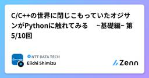
C/C++の世界に閉じこもっていたオジサンがPythonに触れてみる ~基礎編~ 第5/10回
NTT DATA TECHのフィード
はじめにこんにちは、NTTデータに勤務する一人のオジサンです。これまでC/C++言語を使って、がっつりとポインタやら参照やらに向き合いながら、プログラムを書いてきました。構造体と仲良くなり、クラスに振り回され、newとdeleteに責任を持つ。そんな人生でした。しかし時代は変わり、AIだ、データサイエンスだ、機械学習だと騒がれる中、「とりあえずPythonに触れないとまずい」という危機感に駆られて、Pythonの世界へ足を踏み入れた。。。そんなオジサンの独り言です。勘違いがあっても、大目にみてください。 処理じゃない詩なのかstd::vector<std::st...
3日前
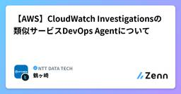
【AWS】CloudWatch Investigationsの類似サービスDevOps Agentについて
NTT DATA TECHのフィード
0.はじめにNTTデータの鶴ヶ崎です。公共分野の技術戦略組織に所属しており、普段はクラウド（主にAmazon Web Services（AWS））を用いたシステム構築等を行っています。re:Invent2025でAWS DevOps Agentが発表されたと思います。類似の既存サービスにCloudWatch Investigationsがあるため、今回は違いを見てみようと思います。 1.従来の障害対応における課題従来は、以下の障害対応フローを人主体で行っているため時間がかかってしまう課題があると思います。CloudWatchアラーム発生→事象の切り分け→原因の仮説立...
3日前
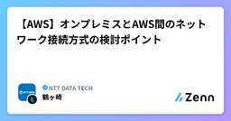
【AWS】オンプレミスとAWS間のネットワーク接続方式の検討ポイント
NTT DATA TECHのフィード
0.はじめにNTTデータの鶴ヶ崎です。公共分野の技術戦略組織に所属しており、普段はクラウド（主にAmazon Web Services（AWS））を用いたシステム構築等を行っています。皆さんは、お客様や社内のオンプレミス環境からAWS環境へのセキュアな接続を検討した経験はないでしょうか。接続方式には大きく以下3つの選択肢があると思います。AWS Client VPNAWS Site-to-Site VPNAWS Direct Connect（以下、Direct Connect）今回は、3つ目のDirect Connectについて焦点を当て、オンプレミスーAWS間の...
3日前
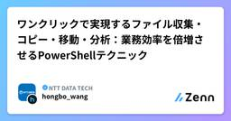
ワンクリックで実現するファイル収集・コピー・移動・分析：業務効率を倍増させるPowerShellテクニック
NTT DATA TECHのフィード
1. こんな「大変な」ファイル作業、ありませんか？日々の業務で、簡単なファイル操作なのに、回数が多い／範囲が広い／条件が細かい等の理由により一気に手間が増えるような経験はありませんか？本記事では、こうした煩雑なファイル収集・コピー・移動・整理作業を、PowerShellを使って“ワンクリックで自動化”する方法を紹介します。設定を一度作れば繰り返し使える仕組みを解説し、日常業務の負担を大幅に軽減する実践的なテクニックをまとめています。!本資料で紹介しているスクリプトは、あくまでサンプルとして提供するものです。実際にご利用いただく際は、内容を十分に確認のうえ、利用者ご自身の責任...
3日前
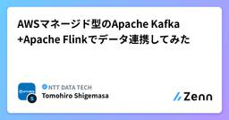
AWSマネージド型のApache Kafka+Apache Flinkでデータ連携してみた
NTT DATA TECHのフィード
1. はじめに突然ですが、Apache KafkaとApache Flinkについて理解を深めたいと思い、AWS(Amazon Web Services)でこれらのマネージドサービスが提供されているため、使ってみようと思います。詳細は後述しますが、Apache Kafkaに連携されたデータをApache Flinkで読み取り、連携先に送るというシナリオで実施してみます。※本記事に記載のサービス名や画面キャプチャ等は2026/3/8時点のものであり、今後変更される可能性がある点はご留意ください。また、最低限の機能実現のための流れや理解促進を目的とした記載内容であり、実運用の際には...
3日前
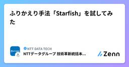
ふりかえり手法「Starfish」を試してみた
NTT DATA TECHのフィード
はじめにスクラムでチーム運営をしていると、スプリントごとにレトロスペクティブ（ふりかえり）を実施していると思います。一方で、毎回同じ進め方を続けていると、どうしてもマンネリ化してしまい「やってはいるけど盛り上がらない」「新しい気づきが出にくい」といった悩みが出てくることもあります。そんなとき、ふりかえりの“型”を少し変えるだけで場の空気が変わり、参加意欲や発言のしやすさが上がることがあります。そこで、「もっとふりかえりを極めたい！」という思いを持った有志で、『ふりかえりカタログ』を参考に、まだ使ったことのない手法を実際に試してみることにしました。今回は「Starfish」にトライし...
3日前
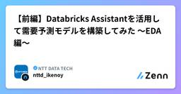
【前編】Databricks Assistantを活用して需要予測モデルを構築してみた 〜EDA編〜
NTT DATA TECHのフィード
はじめにはじめまして。NTTデータでデータサイエンティストを務めております池野です。本記事では、Databricks Assistantを活用して需要予測モデルを構築してみた内容をご紹介します。内容に少しボリュームがあるため、前編・後編の2部構成でお届けします。前編：背景・コンセプト整理からEDA（探索的データ解析）、需要要因の仮説出しまで後編：特徴量設計、ベースライン構築、機械学習モデル構築、振り返りまで需要予測はビジネスインパクトの大きいテーマですが、実務では前処理やEDA、特徴量設計などに多くの時間がかかります。そこで今回は、「Assistantを活用する...
4日前
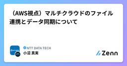
（AWS視点）マルチクラウドのファイル連携とデータ同期について 1
1
NTT DATA TECHのフィード
閉域網／GSS G-Netにおける署名付きURL・DataSync・DMSの利用可否まとめ2026年3月25日 株式会社NTTデータ 第三公共事業本部 小沼真実この記事は、インターネット／閉域網／GSS G-Net（※） というネットワーク条件において、ある程度大きいサイズのファイル・データを、異なるクラウド環境の間で定期的に連携したいという要件があった場合を想定しています。以下の3つの方式において、Amazon Web Services（AWS）のマネージドサービスとして、代表的な3つのサービスを利用した場合、その利用可否に課題があることが分かったため、今回はそれを技術メモと...
4日前
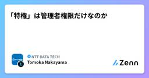
「特権」は管理者権限だけなのか
NTT DATA TECHのフィード
はじめにシステムの設計から運用において、避けて通ることができない要素の一つに「特権」があります。特権は一般的に、セキュリティ設定の変更やユーザーの権限変更などあらゆる権限が付与された「管理者権限」などの強力な権限を指すと考えられがちです。しかし実際には、管理者権限でなくとも特権に該当するケースが存在します。また、一口に「特権」と言っても、人に紐づくものもあれば、OSやミドルウェアなどの人以外に紐づくものがあります。さらには、アプリの設定変更や権限昇格など、様々なものがあります。特権は、故意の悪用や操作ミスなどによって情報漏えいやシステム停止のインシデントを招きます。そのため、シス...
4日前
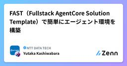
FAST（Fullstack AgentCore Solution Template）で簡単にエージェント環境を構築
NTT DATA TECHのフィード
1. はじめにFAST（Fullstack AgentCore Solution Template）はAWS（Amazon Web Services）が提供するフルスタックのAIアプリケーションのテンプレートです。本テンプレートを活用することで、従来数週間かかっていた環境構築を短時間で実施することが可能となります。本テンプレートはAWS Amplify、Amazon Cognito、Amazon Bedrock AgentCoreなどのサービスを活用して構成されておりますが、これらをゼロから構築するのは大変です。FASTはこれらが一括で準備されており、いくつかコマンドを実行してい...
5日前
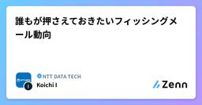
誰もが押さえておきたいフィッシングメール動向 1
NTT DATA TECHのフィード
1. はじめにフィッシングは、独立行政法人情報処理推進機構（IPA）が発表する 「情報セキュリティ10大脅威（個人）」に8年連続で選出されるなど、誰もが直面しうる代表的なセキュリティ脅威です。https://www.ipa.go.jp/security/10threats/10threats2026.html現在のフィッシングは、量（件数）と質（内容や手法の巧妙さ）の両面で脅威が一層増大しているといえます。特に2025年春頃には、証券会社を騙るフィッシングが社会問題になりました。本記事では、フィッシング対策協議会や警察庁などが公表している最新情報をもとに、セキュリティ専門家で...
5日前
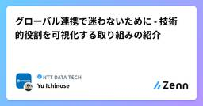
グローバル連携で迷わないために - 技術的役割を可視化する取り組みの紹介
NTT DATA TECHのフィード
はじめに（Why）グローバル拠点と協業する案件に関わる中で、「どの拠点が、どの技術領域を担っているのか分かりにくい」、「技術的な相談をしたいが、誰に声をかければよいか迷う」といった声を聞くことがあり、私自身も同様の課題を感じる場面がありました。社内外のエンジニア、アライアンスベンダ、IT部門のご担当者のうち、特にグローバル拠点との連携に課題を感じている方にとって、こうした状況は決して珍しいものではありません。本記事では、こうした課題に対し、グローバル拠点をワンチームとして捉えることを目指し、技術的な役割や強みを可視化するために実施している取り組みを紹介します。 問題（probl...
5日前
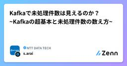
Kafkaで未処理件数は見えるのか？ ~Kafkaの超基本と未処理件数の数え方~
NTT DATA TECHのフィード
はじめに本記事では、分散メッセージングシステムであるApache Kafkaの基本的な構成要素を整理したうえで、「未処理メッセージ件数の取得方式」について紹介します。Kafkaは高いスケーラビリティと耐障害性を備えた強力な基盤ですが、その特性上、従来のキューシステムのように単純に「残件数」を把握することが難しいケースがあります。特に、メッセージの中身に応じて特定条件の件数を把握したい場合、設計や実装に工夫が求められます。本記事では、Kafkaの基本概念の簡単な解説と、Offsetの仕組みを活用しつつ、特定条件の未処理メッセージ件数を算出する方式を具体例とともに紹介します。K...
5日前
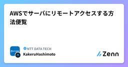
AWSでサーバにリモートアクセスする方法便覧
NTT DATA TECHのフィード
はじめに（リモートアクセスについて）現代では、コンテナやマネージドサービス等、運用者からの直接ログインなしで運用できる範囲が広がっています。しかし、現実問題として、運用上の要件や制約によって完全にリモートアクセス（ログイン）を無くすのは難しいケースが多いと思います。リモートアクセス経路・方式の設計にはいつも悩まされます。統制・監査の実現方式GUIを利用しようとする場合の接続プロトコルや方式認証・認可等セキュリティの実現方式ロケール対応（日本語対応）の実施など、難しい設計要素を含むためです。そこで今回はAWS（Amazon Web Services）でリモートアク...
5日前